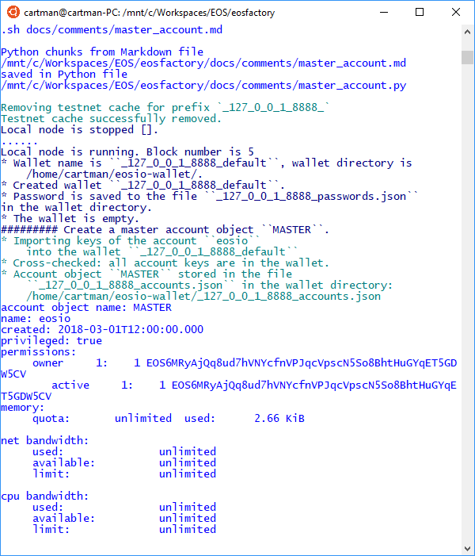
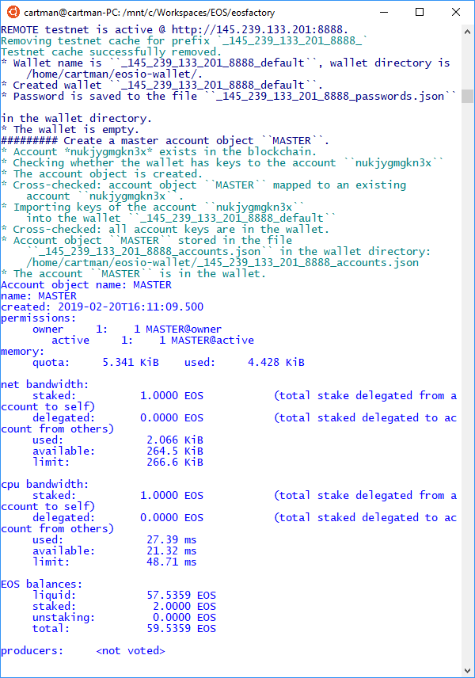
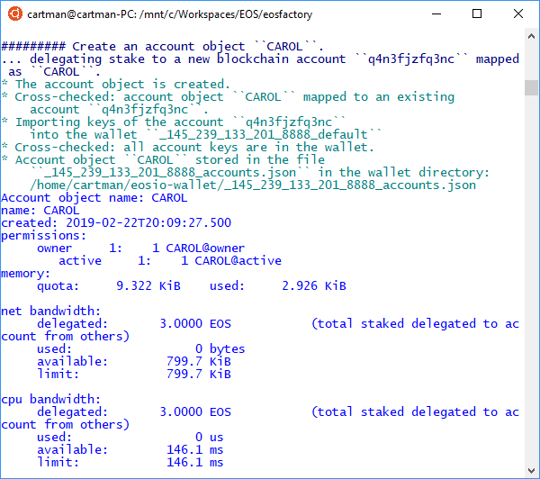

MASTER Account Object¶
EOSFactory wraps EOSIO accounts using Python objects, i.e. instances of the Account class. A MASTER account is also, most often, an instance of the Account class, but it plays a special role in EOSFactory: it spawns other accounts into existence.
The implementation of a MASTER account is dependent on the context:
- On a local (private) testnet the MASTER account refers to the
eosiosuper account. As such, it has limited capabilities, e.g. it cannot be associated with a smart-contract. - On a remote (public) testnet the MASTER account refers to the initial account created by the user manually. It behaves like a normal account, apart from the fact that it is used to sponsor the creation of other accounts.
Let’s consider two scenarios: first a local (private) testnet, and then a more complex situation of a remote (public) testnet.
Local testnet¶
Create a new Python session and import EOSFactory API:
python3
from eosfactory.eosf import *
First, let’s start a local testnet:
reset()
Next, we create a wallet and then we use the create_master_account command to create a global variable named MASTER referencing the eosio account.
create_master_account("MASTER")
MASTER.info()
Here is the expected outcome:

And finally, we show how the MASTER variable can be used to create other accounts:
create_account("ALICE", MASTER)
ALICE.info()
Remote testnet¶
Create a new Python session and import EOSFactory API:
python3
from eosfactory.eosf import *
First, we need to define a remote testnet and pass to EOSFactory the data of the account we control there:
testnet = Testnet(
"nukjygmgkn3x",
"5KXxczFPdcsLrCYpRRREfd4e2xVDTZZqBpZWmvxLZYxUbPzqrWL",
"5KJLMupynNYFiM9gZWtDnDX55hbaF18EsWpFr8UvyJeADqbwN7A",
"http://145.239.133.201:8888"
)
We supply four parameters:
- an URL of a public node offering access to the testnet, e.g.
http://145.239.133.201:8888, - the name of an existing account on this testnet, e.g.
nukjygmgkn3x, - the account’s owner & active private keys.
Next, we let EOSFactory configure and verify the testnet:
testnet.configure()
testnet.verify_production()
testnet.clear_cache()
Then, we proceed to create a global variable named MASTER referencing the remote testnet account:
create_master_account("MASTER", testnet)
MASTER.info()
NOTE: In this case the create_master_account command takes an extra parameter, i.e. the reference to the remote testnet.
And finally, we show how the MASTER variable can be used to create other accounts:
create_account("CAROL", MASTER, buy_ram_kbytes=8, stake_net=3, stake_cpu=3)
CAROL.info()
NOTE: You might want to tweak with the extra parameters, i.e. buy_ram_kbytes, stake_net and stake_cpu.
Here is the expected outcome:
 